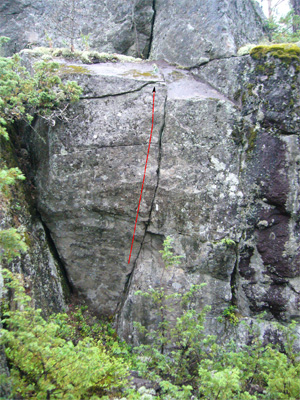

Mosjön
GPS: 63.319274,18.99828
Allmänt
Vår-sommar 2008 såg Mosjöns boulderområde sitt första ljus, ryktet spreds att ett av sveriges coolaste block (boulder) modell större hade hittats på en skogsslänt i Mosjön, norr om Örnsköldsvik. Efter att området inventerats så visade det sig att det fanns flertalet stora block, highballs, väggar samt mindre stenar...Det är en högkvalitativ bouldering på sten med samma goda kvalitet och friktion som
Ringkallen
.
Stora och lilla stenen samt några övriga problem är välrensade och välklättrade. Utgå från att övriga problem är dåligt rensade och ytterst lite klättrade och därför har märkliga grader. De stenar och problem som är ordentligt klättrade och rensade anges särskilt.
Mosjön ligger för övrigt ca 10 km söder om Husums boulderområde, Dombäck.
Bild & Film
Boende
Det går bra att slå upp tältet i närheten av vändplanen. Inget rinnande vatten.
har stugor, husvagnscamping och tältplatser knappt en kilometer från klättringen.
Väder
(Det finns ett annat Mosjön i Västernorrland, Höbyn är närmaste ort med väderprognos på yr.no)
Pdf
Översiktsbild Mosjön boulderområde
Problemsortering
Vägbeskrivning
Mosjön ligger drygt två mil norr om Örnsköldsvik längs E4, just söder om Husum. Vid infarten mot Mosjö Camping vid E4:an, tag av mot Lilla Mosjön.
Följ grusvägen ca 500m. Sväng in på skogsbilvägen åt höger vid 4-vägskorsningen.
Det går bra att parkera direkt efter backen bredvid vägen eller längre fram vid en vändplan.
Där skogbilvägen svänger åt vänster så går en alldeles ny traktorväg upp mot slänten. Gå längs traktorvägen till dess den svänger av mot höger vid en liten glänta, ta diagonalt åt vänster och gå upp på slänten mot blocken.
Översiktsbild

Sektorer
A.
- 1
- Ordkriget
- 6B
- Traverse till vänster, upp i slutet av kortsidan.
- 2
- Foxhole
- 6A+
- Starta vid kanten.
- 3
- Barbwire
- 5C
- Traverse, följ sprickan till vänster.
- 5
- Assasin
- 5B
- Startar vid kanten, använd lister till höger för HH.
- 6
- POW
- 6C
- Startar under överhänget i givna grepp, slutar med sloper. Dåligt rensat utsteg
- 7
- Wallenbergaren
- L
- Rakt upp för slabpartiet.
B.
- 1
- Schvullo
- 6B
- Väggen och dess lister, ej areten.
- 2
- Snickarens Matlåda
- 6A+
- Arete.
- 3
- True Blood
- 7A+
- Klättra via krimpers och slopiga grepp upp till toppen.
C.
- 1
- Flaavio
- 6C
- Traverse till vänster, upp via sprickan på slutet.
- 2
- Bäcken
- 5B
- Klättra rakt upp, arete ej med.
- 3
- Älfven
- 6A
- Klättra ngt till höger.
D.
- 1
- Kaffedarren
- 6A
- Slopers och kant.
- 3
- Julmust
- L
- Via stora grepp upp.
E.
- 1
- Skuggan
- 6B+
- Traverse till vänster, tydliga startgrepp, upp i slutet.
- 2
- Fascisten
- 6C
- rakt upp via krimpers & slopig kant.
- 3
- Krokodilen
- 6B
- Klättra ngt till höger, upp för kanten.
- 4
- (Project)
- 7?
- Stora & mindre grepp, knöligt avslut.
- 5
- Tigersprång
- 7A
- Få moves, skutta upp högt med fötterna, trixigt!
- 6
- Blazed and Confused
- 6C+
- Traverse till vänster, upp en kort bit in på långa sidan.
- 7
- Lindansaren
- L
- Rakt upp för slabpartiet.
F.
Dessa problem är alla acceptabelt rensade. Ytterligare lite borstning skulle inte skada.
{|
| width="350px" |
- 1
- Sundsvallarn
- 6B
- Arete för VH och spricklist för HH.
- 2
- Radioprataren
- 5C
- Rakt upp via jussta grepp, ngt långa moves.
- 3
- Lifestyle
- 6A+
- Går ngt till vänster, upp för den slopiga kanten.
G. Lilla stenen
Samtliga problem är välrensade. Ingen ytterligare borstning behövs.
{|
| width="325px" |
- 1
- Soulweeper
- 6C
- Startar till höger om trädet vid den stora sloperrampen. Vänster hand på vertikala delen av rampen, höger hand på det lägre greppet på rampen. Går ut åt höger.
- 1b
- (Project)
- 8?
- Sittstarten till Soulweeper.
- 2
- (Project)
- 7C?
- Startar till höger om trädet i stor brevlåda. Traverserar ut åt höger.
- 7
- Volbeat
- 7A
- Startar på stenens vänstra sida. Starta etablerad i jamsprickan. Går ut snett åt vänster
- 8
- (Project)
- ?
- Startar där "Volbeat slutar, lång hangeltravers till vänster, hela långa kanten till blockets slut.
- 3b
- Return to Sender
- 7B+
- "Ståstartsvarianten" mitt på den överhängande sidan, gå rakt upp. '''Variant: Return to sender höger, 7A+''', använder aretet till höger.
- 4
- Deliverance
- 6C+
- Sittstart vid kanten. Följ den högra aréten och toppa ut vid stenens högsta punkt.
H.
- 1
- Wretch
- 6B
- Starta i vertikala rampen till vänster om trädet, reach, sloper.
- 2
- Nevermind (Project)
- 7?
- Startar i givet grepp vid areten, klättra ngt till höger.
- 3
- Purple
- 6C
- Överhäng, på sten till vänster om "Nevermind", fysisk start & trixigt slut.
- 4
- Dirt
- 6B+
- Tak, högra hyllkanten ej med.
- 5
- Skebokvarnsv 209
- 6C
- Överhäng, krimp.
- 6
- Praise Jah
- 6A+
- Krimp på väggdelen, ta dig över taket mha sörre grepp.
I.
- 1
- What the F+++
- 7A+
- Tak, start i krimplist.
- 3
- Lustans Lakejer
- 5A
- Klättra via den tydliga rampen mitt på stenen. Går att göra med sittstart om du är lagd åt det hållet
- 4
- Vegans can´t Jump
- 5A
- Ca två meter till höger om "Lustans Lakejer". Dynamisk till toppen eller statiskt via krimp på areten.
- 5
- Moroten
- 5A
- Krimp, följ sloperhyllan till höger.
- 7
- Staffan å Bengt
- L
- Går rakt upp i stora grepp.
J.
- 1
- Vittrans Magont
- 5B
- Båda kanterna är med.
- 2
- Tomtens Huvudvärk
- 5A
- Krimp, klättra rakt upp via tydliga grepp.

K.
- 1
- Småplåck
- 6B
- Highball, krimp.
- 2
- Jul Stress
- 5A
- Highball, klättra till vänster.
- 3
- Flykten (Project)
- 7?
- Krimp, reach, rakt upp.
- 4
- Spice
- 5C
- Högra kanten ej med.
- 5
- Shitlist
- 5B
- Rakt upp, sprickan till höger ej med.

- 6
- Brannflejk
- 5B
- Väggen nedanför "Shitlist", klättra via sprickan upp.
L. Linedanceblocket
Dessa problem är ofta klättrade och mycket välrensade.
{|
| width="350px" |
- 1
- LineDance
- 6A
- Starta längst till vänster på stenen. Gå rakt upp. Aréten är utesluten.
- 2
- Pubafton
- 6B
- Starta i mitten av stenen. Gå rakt upp.
- 3
- Tradare
- 6B
- Sittstart under lilla taket på stenens högerkant. Gå rakt upp.
M. Stora stenen
Samtliga klättrade problem är mycket välrensade och ofta klättrade. Detta är Mosjöns pärla, och anledningen till att man åker hit i första läget.
{|
| width="350px" |
På bortre sidan av stenen ligger ett ensamt problem
- 1
- (Projekt)
- projekt
- Det uppenbara problemet där taket är som lägst. Starta in mot väggen och klättra till toppen. Alla move gjorda av flera klättrare. Långt och hårt.
- 2
- Nirvana
- 7C
- Slopers, pinch, överhäng, starta i stor undercling mitt under taket. Lättaste vägen upp.
- 3
- (Project)
- projekt
- Starta som "Nirvana" men dra åt höger från den sluttande rampen. Alla move gjorda av flera klättrare. Långt men lätt.
- 4
- Mumana
- 7B+
- Röd linje, Starta med höger hand på stor dålig list och vänster hand på låg stor list. Första movet är upp till undertagen. Klättra rakt upp. '''Variant:''' Klättra som Gud ville med naturlig stående start, 7B
- 7
- Tralla-La
- 6A
- Sittstart. Startar på lilla skeppet på klippan som stora taket vilar på. Starta från juggen i sprickan, gå rakt upp via sloperrampen.
- 8
- PN's uppvärmningsboulder
- 5C
- Sittstart. Alla "ergonomiskt" utformade grepp är uteslutna. Klättra som boulderguden tänkte. OBS!! Undvik att använda det lösa blocket till höger på toppen.
- 9
- PG's uppvärmnigsboulder
- 5A
- Sittstart. Gå via de "ergonomiskt" utformade greppen till toppen. Alla andra grepp är off-limit. OBS!! Undvik att använda det lösa blocket till höger på toppen.
N. Övre väggen
Välrensat och ofta klättrat problem.
{|
| width="350px" |
- 1
- Hyperborea
- 7B
- Taket under den höga väggen ovanför Stora stenen. Starta med höger hand på bra list och vänster hand i klyka. Kliv av efter ni mantlat ut på väggen ovanför taket, eller fortsätt 6-7 meter till toppen (orensat).
O.
- 1
- Vakttornet
- 5B
- Highball, med fin utsikt.
- 2
- Fyrvaktaren
- 5B
- Highball, Mitt på väggen, kanterna uteslutna.
- 3
- Vårdkasen
- 5B
- Highball, krystat med sittstart men det blev bara så!!
P.
- 1
- Cannahuana
- 5B+
- Det lilla blocket på baksidan.
- 2
- Grottmannen
- 5A
- Mantling.
- 3
- IL PAPA
- 6B+
- Brant slab, båda kanterna är med för VH och HH.
- 4
- Pro Anna
- 6C
- Krimp, klättra till vänster och upp till det stora sidogreppet, sedan upp till toppen.
- 5
- Kubansk Snedres
- 6B
- Klättra sprickan upp.
- 6
- Oklottrad
- 6C
- Klättra upp väggen mellan ''Snedres'' och ''Bitter End''.
- 7
- The Bitter End
- 5C
- Klättra aréten upp.
- 8
- Hempf Fest
- 6A
- Väggen med VH & HH i spricka resp kant.
- 9
- Galactico
- 6B+
- Endast den vänstra tunna sprickan med händerna, en variant av "Hempf Fest".
Q. Snygga areten
Den höga snygga areten är vacker men väl futuristisk. Den zig-zag formade sprickan är hyggligt rensad men det övriga är skitigt.
{|
- 1b
- (Project)
- 8?
- Futuristiskt.
- 3
- Biaffra (Project)
- 7?
- Grön linje, Starta i den tunna sprickan som övergår i den stora sprickan.
- 4
- Zappatisten
- 6B+
- Blå linje, Följ den stora sprickan upp till toppen.
- 5
- Xpress Urself
- 6B+
- Den vänstra aréten upp.
- 6
- Tribunalen
- L
- Klättra den stora sprickan på blockets vänstra sida.
R. Tunna röda pilen
Välborstad och ofta klättrad. Kommer nog tyvärr att gro igen pga vattenrinning.
{|
| width="350px" |
- 1
- Den tunna röda pilen
- 6B
- Highball, klättra den långa sprickan upp till toppen. Välrensad nu, men är blöt efter regnväder, så räkna med att den växer igen lite för varje år.
S.
- 1
- K-BAR
- 6C
- Den uppenbara kanten, dålig landning!!.
- 2
- Pancake (Project)
- 7?
- Klättra rakt upp via de pannkaksformade listerna, hylla till vänster är ej med.
- 3
- Mirakel Spektakel
- 6A
- Aréten upp, att kliva till höger ut på hyllan är uteslutet.
- 4
- Släng Morsan av Tåget
- 6B
- Krimp, reach, aréten ingår ej.
- 5
- Stretch
- 6C+
- Krimp och reach, går lite till vänster, aréten är med.
- 7
- Inkörsporten
- 5C
- Starta lägre ned på marken lite till höger om den högre marknivån till vänster. Upp till den stora greppformationen mitt på väggen, upp för kanten.
- 8
- Verdens Gang
- 6A
- Sloperkanter till hyllkant sedan upp.
- 9
- Smyge
- 5C
- Slab, krimp, mitt på väggen, kanterna ingår ej.
- 10
- Nödnedgången
- 5A
- Slab, VH på vänstra kanten.
T.
- 1
- Some Kind of Monster (Project)
- 8?
- Låg start i krimp, slopers till toppen.
- 2
- Hair-Raiser
- 6C+
- Överhäng, krimp & slopers. Starta i sloperhyllan...Akta ryggen!
- 3
- Obscen
- 6A+
- Konstigt problem! Kliv upp på sloperhylla, skicka till krimp & slopers, kliv upp...
- 4
- Gloryhole
- 5C
- Vägg, krimp, klättra mitt på väggen till hålet, krimp till toppen. Kanter på båda sidor ingår ej!.
In English
Description
Resting on a forested hill in Mosjön, north of Örnsköldsvik, is one fantastic boulder, one quite fine boulder, and a few less interesting boulders and faces; offering high-quality steep bouldering on high-friction rock with comfortable holds.
Directions
Mosjön is about 20 km north of Örnsköldsvik along the E4, just south of Husum. Take the road to
Lilla Mosjö
opposite to the entrance to
Mosjön Camping
. Follow the gravel road 500 m and turn right on a rough logging road. Park at the turn around and walk up-hill to the boulders. See
#Vägbeskrivning
above for maps.
Season
Mid april--November
Staying there
There are many places to pitch the tent around the bouldering area, but no fresh-water creeks.
have reasonably priced cabins and a trailer park.
Kategori:Ö-vik
Kategori:Bouldering
Kategori:Bimbo
Kategori:Saknar skrivarformatering
Kategori:Ångermanland
Kategori:Utkast
Kategori:Engelska
Copyright (C) Permission is granted to copy, distribute and/or modify this document under the terms of the GNU Free Documentation License, Version 1.3